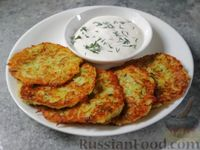
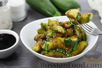
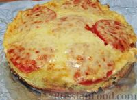
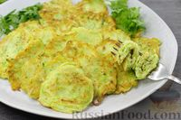

| Название блюда | Ваша оценка От 1 до 10 |
Ссылка на рецепт | Фото блюда |
|---|---|---|---|
| Кабачково-картофельные драники | 7 | Кабачково-картофельные драники |  |
| Кабачки с соевым соусом и чесноком (на сковороде) | 8 | Кабачки с соевым соусом и чесноком (на сковороде) |  |
| Запеканка из кабачков | 9 | Запеканка из кабачков |  |
| "Невидимый" закусочный кабачковый пирог | 10 | Кабачковый пирог | |
| Простые оладьи из кабачков | 7 | Оладьи из кабачков |  |